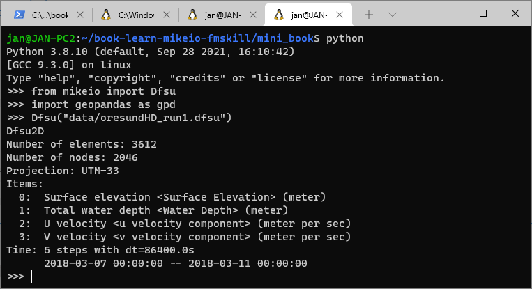

Export to file
Contents
Export to file#
A need for exporting dfsu files to other formats, such as raster formats (NetCDF, GeoTIFF) or vector formats (ESRI Shape, GeoJSON) are not uncommon.
There are usually very specific requirements about the exported data, naming, metadata, resolution and so on, which is why we don’t provide out of the box tools to convert files back and forth from a lot of formats, but instead provide the necessary building blocks and some examples to use as inspiration.
Examples#
Export to shapefile#
Exporting to GIS formats such as ESRI Shapefile or GeoTiff requires some libraries which are tricky to install on Windows.
One way is to use Conda-forge
Download the Miniconda installer
Install GeoPandas:
conda install --channel conda-forge geopandas
An alternative is to use to run python under Windows Subsystem for Linux

import mikeio
import geopandas as gpd
dfs = mikeio.open("data/oresundHD_run1.dfsu")
dfs
Dfsu2D
number of elements: 3612
number of nodes: 2046
projection: UTM-33
items:
0: Surface elevation <Surface Elevation> (meter)
1: Total water depth <Water Depth> (meter)
2: U velocity <u velocity component> (meter per sec)
3: V velocity <v velocity component> (meter per sec)
time: 5 steps with dt=86400.0s
2018-03-07 00:00:00 -- 2018-03-11 00:00:00
ds = dfs.read(items="Surface elevation")
ds
<mikeio.Dataset>
dims: (time:5, element:3612)
time: 2018-03-07 00:00:00 - 2018-03-11 00:00:00 (5 records)
geometry: Dfsu2D (3612 elements, 2046 nodes)
items:
0: Surface elevation <Surface Elevation> (meter)
maxwl = ds["Surface elevation"].max(axis=0).values
maxwl.shape
(3612,)
shp = dfs.geometry.to_shapely()
type(shp)
shapely.geometry.multipolygon.MultiPolygon
poly_list = [p for p in shp.geoms]
gdf = gpd.GeoDataFrame({'waterlevel': maxwl},geometry=poly_list, crs=dfs.projection_string)
---------------------------------------------------------------------------
CRSError Traceback (most recent call last)
Input In [6], in <cell line: 1>()
----> 1 gdf = gpd.GeoDataFrame({'waterlevel': maxwl},geometry=poly_list, crs=dfs.projection_string)
File /opt/hostedtoolcache/Python/3.9.13/x64/lib/python3.9/site-packages/geopandas/geodataframe.py:126, in GeoDataFrame.__init__(self, data, geometry, crs, *args, **kwargs)
122 super().__init__(data, *args, **kwargs)
124 # need to set this before calling self['geometry'], because
125 # getitem accesses crs
--> 126 self._crs = CRS.from_user_input(crs) if crs else None
128 # set_geometry ensures the geometry data have the proper dtype,
129 # but is not called if `geometry=None` ('geometry' column present
130 # in the data), so therefore need to ensure it here manually
(...)
134
135 # if gdf passed in and geo_col is set, we use that for geometry
136 if geometry is None and isinstance(data, GeoDataFrame):
File /opt/hostedtoolcache/Python/3.9.13/x64/lib/python3.9/site-packages/pyproj/crs/crs.py:488, in CRS.from_user_input(cls, value, **kwargs)
486 if isinstance(value, cls):
487 return value
--> 488 return cls(value, **kwargs)
File /opt/hostedtoolcache/Python/3.9.13/x64/lib/python3.9/site-packages/pyproj/crs/crs.py:335, in CRS.__init__(self, projparams, **kwargs)
333 self._local.crs = projparams
334 else:
--> 335 self._local.crs = _CRS(self.srs)
File pyproj/_crs.pyx:2352, in pyproj._crs._CRS.__init__()
CRSError: Invalid projection: UTM-33: (Internal Proj Error: proj_create: several objects matching this name: Schwarzeck / UTM zone 33S, RGRDC 2005 / UTM zone 33S, Malongo 1987 / UTM zone 33S)
Ouch… The short and smart projection string “UTM-33” is apparently not understood by GeoPandas. Better look it up on the web https://spatialreference.org/ref/epsg/32433/
gdf = gpd.GeoDataFrame({'waterlevel': maxwl},geometry=poly_list, crs="EPSG:32433")
gdf.head()
| waterlevel | geometry | |
|---|---|---|
| 0 | 0.321391 | POLYGON ((353122.611 6199631.339, 354250.947 6... |
| 1 | 0.254802 | POLYGON ((356811.295 6165979.110, 356926.413 6... |
| 2 | 0.210542 | POLYGON ((334193.183 6143454.831, 332951.036 6... |
| 3 | 0.213418 | POLYGON ((330871.279 6142677.275, 331831.835 6... |
| 4 | 0.208291 | POLYGON ((334327.062 6140906.232, 335381.131 6... |
Export as ESRI Shapefile
gdf.to_file("waterlevel_utm.shp")
/opt/hostedtoolcache/Python/3.9.13/x64/lib/python3.9/site-packages/geopandas/io/file.py:362: FutureWarning: pandas.Int64Index is deprecated and will be removed from pandas in a future version. Use pandas.Index with the appropriate dtype instead.
pd.Int64Index,
Which can be used together with other data sources and customized in QGIS

Or GeoJSON, which some might prefer…
gdf.to_file("waterlevel_utm.json")
/opt/hostedtoolcache/Python/3.9.13/x64/lib/python3.9/site-packages/geopandas/io/file.py:362: FutureWarning: pandas.Int64Index is deprecated and will be removed from pandas in a future version. Use pandas.Index with the appropriate dtype instead.
pd.Int64Index,